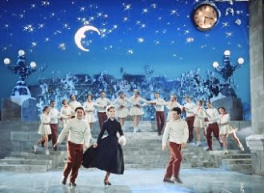

В один простой ноябрьский день,Десятого числа,Средь новорожденных детейВ наш мир пришла звезда.

Весёлая девчонка с тонким станом,Она вошла в советское искусство,Любовь дарила зрительному залу,И было обоюдным это чувство.
Я - женщина! И в этом звучном словесоединяю мир, любовь и негу...Я - женщина. И каждый миг я помню,что есть во мне Луны источник, мега-
Издалёка в далёко путь держала река. А просторы ласкали ее берега. На крутом берегу там юный тополь рос. Речку вольную он любил до слёз.
Как упоительны в России вечера!Любовь, шампанское, закаты, переулки.Ах, лето красное, забавы и прогулки!Как упоительны в России вечера.
Подними глаза в рождественское небо,Загадай всё то, о чём мечтаешь ты.В жизни до тебя я так счастлив не был.Для тебя одной, их так любишь ты,
Смелый, как ветер, свободный я делал все, что душе угодно.Жил для себя год за годом крутой проявляя нрав.
Только ты почаще мелькайНа секунду там, в облаках. Слёзы - это пусть, А я же сильная, тебя дождусь. Знаешь, а сейчас у нас снег.
Есть в полиции сотрудник,Всем известен,всем знаком,В выходные он и в будни,Постучится в каждый дом,Он проверит —все в ажуре?
Он такой, ему другим быть нельзя. Твёрдый характер, смелые глаза. Он такой, и я в него влюбилась. В 5-ом классе, не получилось.
Freestyler, rock the microphoneStraight from the top of my domeFreestyler, rock the microphoneCarry on with the freestyler
C'est comme une gaieté Comme un sourire Quelque chose dans la voix Qui paraît nous dire «viens» Qui nous fait sentir étrangement bien
[Verse 1]Can I make a little toast?Can we get a little close?Can I get an amen?Can I get a hell yeah?Can I get a holy ghost?
When I get chills at nightI feel it deep inside without you, yeahKnow how to satisfyKeeping that tempo right without you, yeah
Мы давно уже не дети,Прекрасно понимаем и без слов.Вокруг наматываю петли -Пристегнись, если готов!
Я птицу счастья свою отпускаю на юг,Теперь сама я пою, теперь сама летаю.Ааа-а. У-ага е е.Ааа-а. У-ага е е.
Знаешь, ты была праваГод прошёл, а я скучаюГде найти мне островаГде тебя я повстречаю
Текут года, блестит вода. Мы словно в зеркало, видим в ней себя. В твоей руке моя рука,И счастлив я, что нашел тебя.
Ах, я уже не верила, не надеялась,Не гадала на любовь.Но что-то ветром с берегаМне навеяло, и моя взыграла кровь.
Years ago when I was youngerI kinda liked a girl I knewShe was mine and we were sweetheartsThat was then, but then it's true